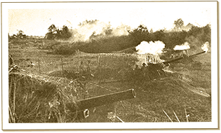

|
j
a v a s c r i p t |
April 8, 1942
Went to the bank to withdraw P50 out of my prewar genuine money account. Truth is, with business so bad and my salary going into medicines and such, I'm broke too. Floyd and Henry arrived late and tired after a long walk to the store. We talked about Santo Tomas for about an hour, during the course of which Floyd thanked me exactly twelve times and gave me an IOU written in pencil — which I promptly lost. They had upset stomachs last night after spending their last nickel on pancit (a lot of noodles for the money). Maurice came along, and seeing I couldn't leave the store at the time, took both Henry and Floyd to the Astoria for coffee and a storm of rolls.

Japanese artillery shelling Bataan
Manila's abuzz after a USAFFE communiqué reported a retreat "to previously prepared positions." The hospital was bombed again with heavy casualties this time, including some nurses. Strange how everyone here gets the news. The Manila grapevine system is incredibly efficient. Each source passes the news on to his trusted clique, and it even gets into Santo Tomas. As long as a few have radios, the Japanese won't be able to stop us from getting the news. Pacifico Ledesma barged into the store full of confidence after a long talk with a "Bataan spy" who came here three days ago to look things over. The man was full of confidence, and mentioned that USAFFE communiqués were full of misinformation. I felt better after we thrashed it out for a while. I'm now keeping my fingers crossed. Enjoyed a hilarious Radio India skit tonight that tried to reconcile the Japanese need for territory with the March '41 legislation, approved by the emperor, that each family should bear five children in order to boost Japan's population to 100 million by 1960. Australia reported the destruction of 148 Japanese planes in New Guinea and Dutch Timor against own losses of 16. I felt good tonight, though an earthquake at 0142 was trying to tell me something. It was a strong one too: 'Intensity VI' — a gentle swaying motion as opposed to the more dangerous up-and-down shakes. I slept through the 0400 aftershock. |